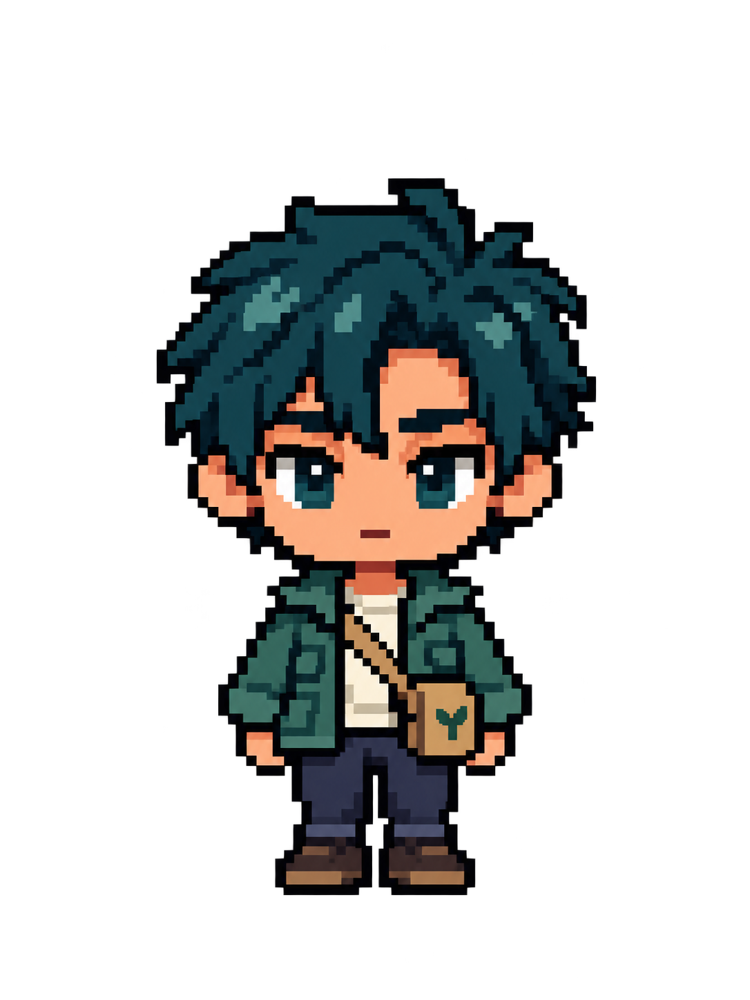
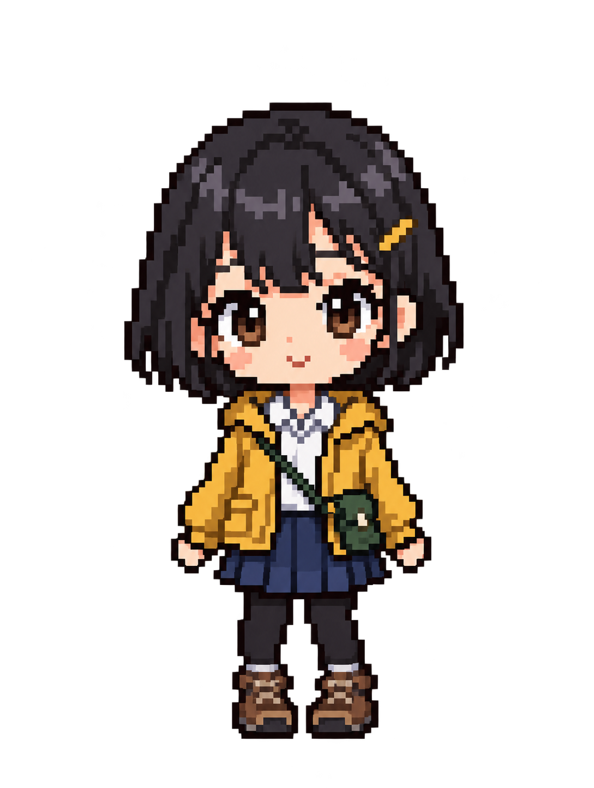
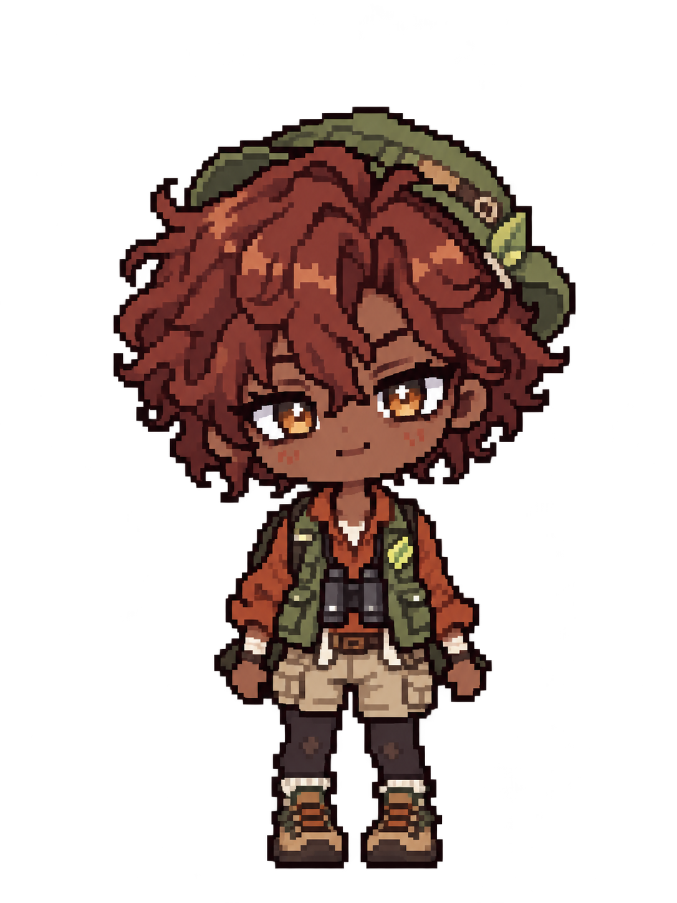
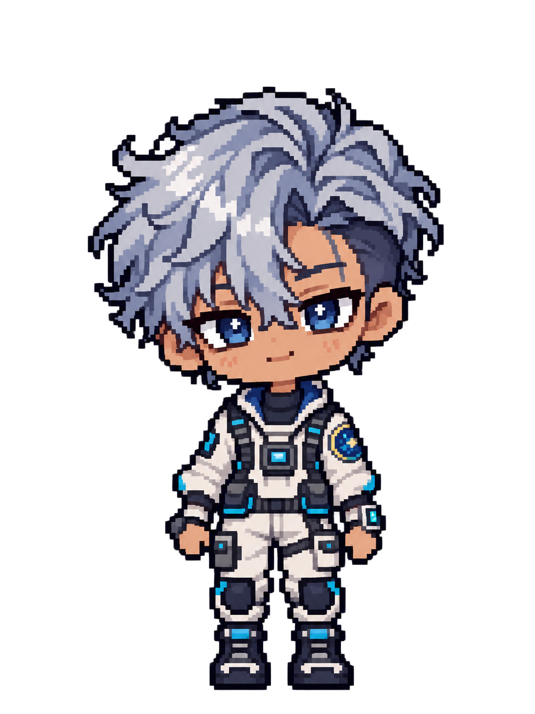
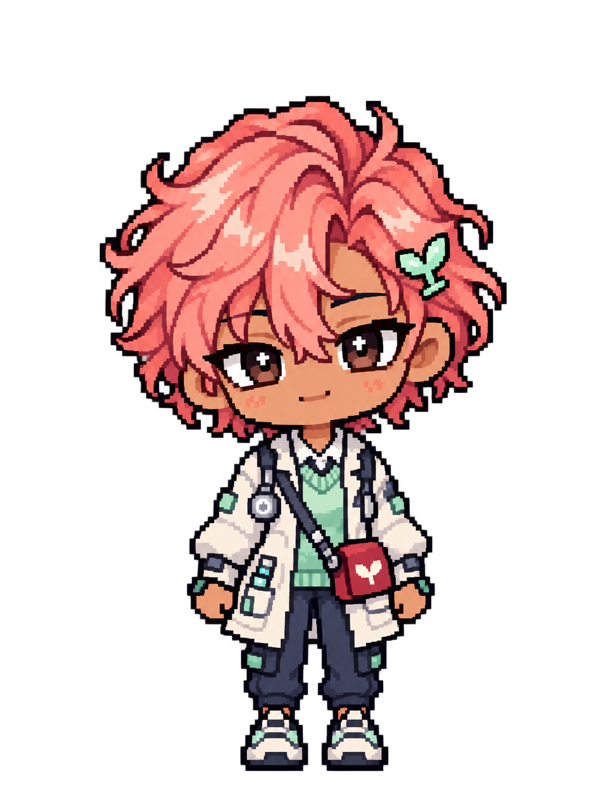
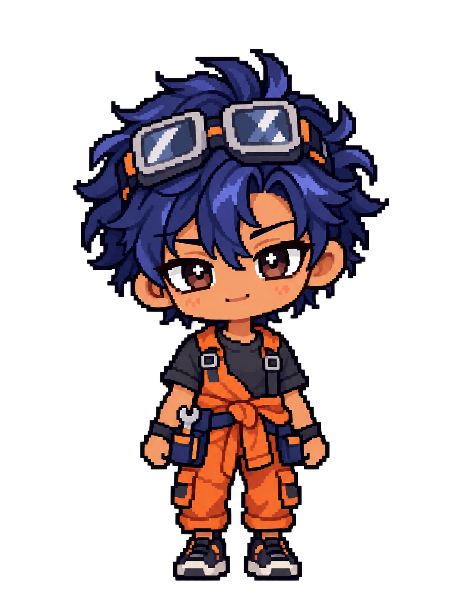
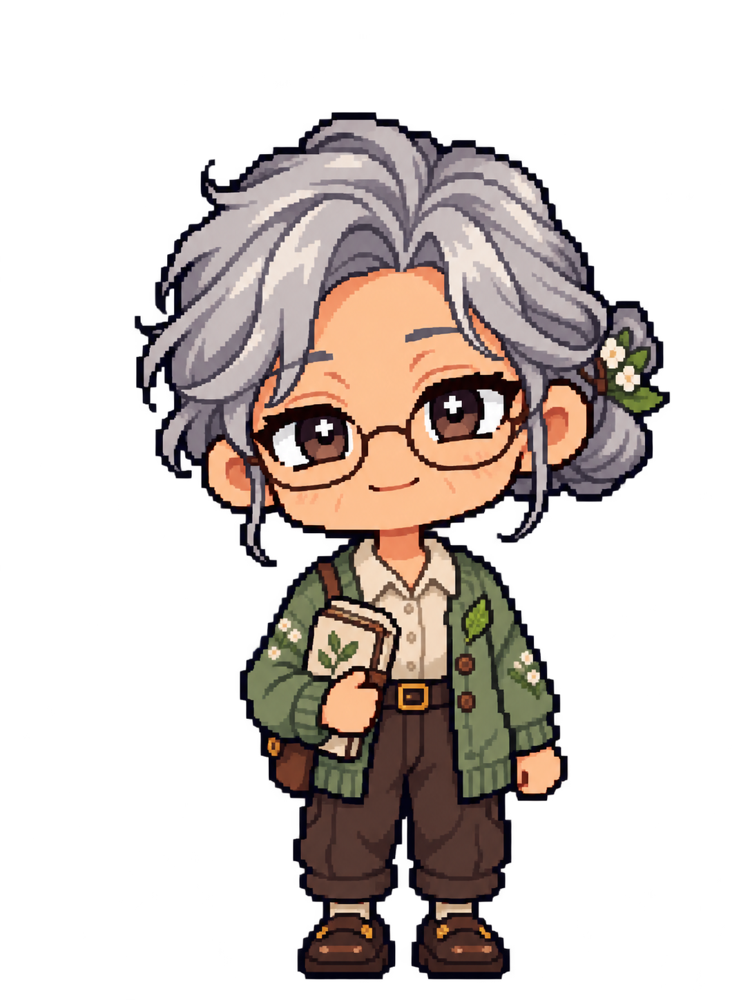

이미지를 불러오거나 펜으로 직접 그릴 수 있습니다.
맵에는 바닥·벽·문·창문만 생성합니다. 가구와 장식은 오브젝트 공방에서 별도로 추가하세요.
실내 맵은 화면 대부분을 차지하는 넓은 바닥과 낮은 뒤벽 두 개만 생성합니다. 천장과 아래쪽 앞벽은 만들지 않으며, 윗배경은 나중에 중간 벽이나 가림 구조가 필요할 때 직접 추가할 수 있습니다.







대기는 8방향, 기본 동작 6종은 정면에서 무료로 바로 미리볼 수 있어요.
같은 크기의 투명 PNG를 동작 순서대로 선택하세요. 자동 생성은 현재 그림에 점프·흔들림을 적용하는 무료 간이 기능입니다.